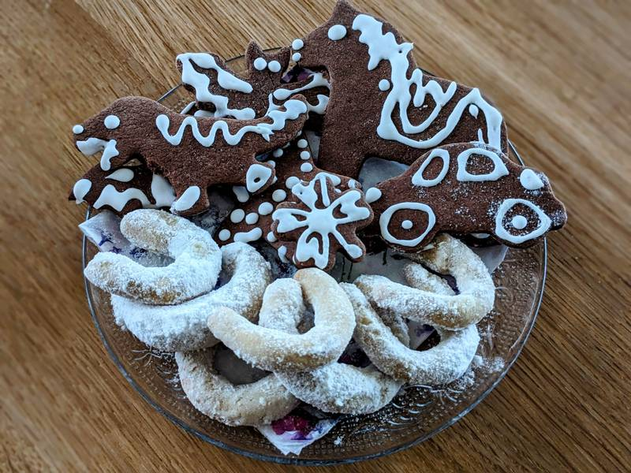

Do této klasiky vánočního cukroví jsem se poprvé pustila už loni, ale nějak se mi vůbec nepovedlo těsto, špatně se s ním pracovalo a byl to boj. Přestože chuťově byly nakonec rohlíčky výborné, letos jsem se rozhodla vyzkoušet jiný recept (podle OnaDnes). Těsto jsem zpracovávala ručně a byla to naprostá pohoda - bylo krásně vláčné, vůbec se netrhalo, nedrobilo, za chviličku bylo hotovo a napečeno. Tímto tedy povyšuju tento recept na náš rodinný a příští rok se ho rozhodně budu držet zas :-)
Na cca 2,5 plechu budete potřebovat:
280g hladké mouky
40g cukru moučka
210g másla
2 žloutky
100g mletých loupaných mandlí
trochu kůry z bio citronu
1 vanilkový lusk, případně trochu vanilkového aroma
Na obalení:
100g moučkového cukru
2 sáčky vanilkového cukru
Na vále nebo v míse zpracujeme mouku s moučkovým cukrem, nakrájeným máslem, žloutky, mletými mandlemi, trochou najemno nastrouhané kůry a vyškrabanou dření z vanilkového lusku, až nám vznikne hladké těsto. Z těsta vytvarujeme kouli, tu zabalíme do potravinářské folie a necháme minimálně hodinu odpočinou a ztuhnout v chladu (já nechala 2 dny). Potom z kousků těsta děláme malé kuličky, postupně vyválíme mezi dlaněmi na válečky a ty stočíme do tvaru rohlíčků. Klademe na plech vyložený pečicím papírem a pečeme v troubě předehřáté na 170°C, dokud špičky nezrůžoví (trvá to asi 8 minut, ale hlídejte to). Upečené rohlíčky sklepneme z plechu na pracovní plochu, necháme pár minut zchladnout a ještě teplé obalujeme v cukru.

A teď už můžou svátky začít. Tak veselé Vánoce :-)!!!